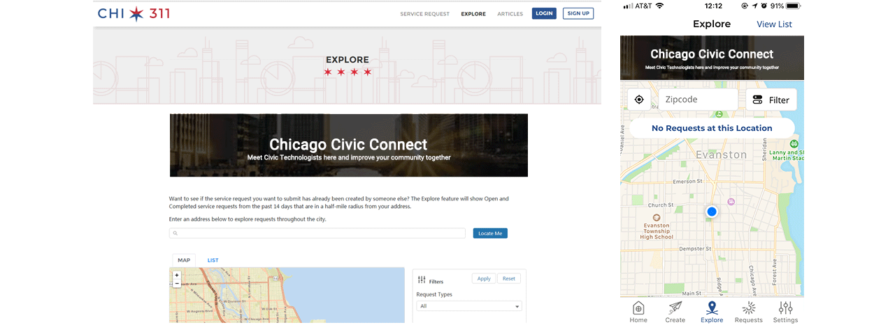

Design Topic
Understanding a Welcome Service for Residents should be accessible, inclusive, innovative and engaging, we are going to focus on designing to meet the needs of [Civic technologists partnering with the city and the open data portal].
Challenge
While cities are built around services for residents, businesses, and visitors, the practice of Civic Service Design is in its earliest stages.
Understanding the opportunity space is critical since we believe that the best services are designed for real people in specific contexts.
As the project is moving forward, we need to continuously explore how the service we designed sets the tone for what it means to engage as a citizen.
Solution
Explore and design ways in which residents discover and engage with City services, ordinances, and opportunities delivered in an accessible, inclusive, and innovative manner.
1. Get Chicagoans the services they need. -Improve access to services for all Chicagoans.
2. Engage residents with their city and community.-Build and enrich communities that use services.
By:
#1 Civic Connect Portal
#2 Entrance on 311 report
#3 QR code in context
Takeaways
● Identify the most critical elements of the service experience
● Develop user empathy through user interviews or first-hand experience
● Present their ideas in a clear, articulate, client- and human-centric model
● Provide potential design concepts that deliver on their determined critical elements
● Prototype concepts to communicate and refine their ideas
● Provide a technical rational for success
● Explore current and near-term-future technologies that enable the idea
Research
#1 Experts interviews
with staffs from the city of Chicago
How we approached this broad objective, and what we did to gain insights. We connected and engaged with citizens in context through interviews and observation.
Civic Technology Ecology enables engagement, participation or enhances the relationship between the people and government.
Stakeholders Maps
Now the city of Chicago is providing data via the open data portal. People could search, download data they want. And the government could release the data after they received a request.

Civic technologists are a group of people who are passionate for contributing their specialization into civic tech projects. They are using and processing data from the open data portal now.
Some civic tech events are happening in the city weekly, like chi hack night and open uptown. Both of them have good participants base and various background people involved in, like the data scientists, developers, designers, and business people.
Civic tech projects are developed based on Chicago citizens needs and trying to solve some specific problem like E. Coli, bike lane or focusing on some specific topics, like voting and election.
Insight 1: Growing wild
Civic tech projects are happening independently except getting dataset or API from the Chicago Open data portal.
Research
#2 Field Study
by immersive research in Civic Tech Events

We attended Chi Hack Night sessions weekly on Tuesday to understand the current user journey and tensions in Civic Tech project development experience.
Insight 2: Tech internal revelry
Although various background people are developing various topic projects, it seems like only techs show up in Chi hack night, so there is a gap between the tech community with residents.
Research
#3 Civic Technologists
individual interviews
Methods
Interception in civic tech events
Phone call informative interview
In person interview
Insight 3: Sustainability dilemma
Aligned with many efforts in developments, technologists know that without people from related communities their product would go a wrong path, but it's hard for them to make the residents and communities involved in their project.
Research
#4 Residents
Insight 4: Isolated awareness
Although some residents eager to make an impact in their community, they don't know civic tech could help them solve problems.
Research
#5 Internal collaboration
with other teams
Three other teams focus on public service, immigrant family and disabled people. So we could find a matched community for reaching out potential motivated residents and unmet needs which could be solved by civic tech.
Insight 5: Civic tech vacuum
Residents now even don't know that many civic tech groups are focusing on developing a product to solve their problems.
Needs Finding
#1 How might we
make the civic tech project more sustainable?
Problem Narrative
Now from idea formation to launching, the real resident's involvement is too little. As the primary users in the future, without their feedback during product development, the product would fail after launching since it didn't catch the user's needs.
Current Journey
Civic Tech Product Development

Design Direction #1:
Bring more residents into civic tech product development
Needs Finding
#2 How might we
bridge the gap between civic tech and residents?
User Class
Civic Technologists and Residents

Design Direction #2:
Make residents be aware of the importance of civic tech
Needs Wrap-up
How might we make residents more engaged in their community by involvement in civic tech project?
Opportunity Area
1. Motivate residents to join in Civic Tech Projects by the successful cases of Civic Tech in Chicago
2. Make better projects and motivated residents matching: More matched, more engaged
3. Show a precise measurement of their contribution in civic tech and engagement in their communities, so that they are driven by improvement and comparison
4. Make an impact by generating more powerful storytelling and experience sharing
Final Design
Ideal Journey Map

Final Design
The service blueprint and Persona


Final Design
Touchpoint #1
QR Code
Final Design
Touchpoint #2
Entrance on other website and search answers in search engine

Final Design
Touchpoint #3
Web Portal for Civic tech and resident connction and measurement
Goal
Bridge the gap between civic technologists and residents
Design principles
Allows civic techs to build with not for
Meets residents where they are regardless of skill or capabilities
Provides measures of engagement so contributors see the impact of their input

Paper Prototype Testing
Mockup and UI Showcase
Civic Connect Chicago encourages residents to be more aware and become more engaged in their community through civic technology.

Next Steps
Feasibility
Build a partnership with existing civic technology events like Chi Hack Night or Open Uptown to understand the feasibility of Civic Connect Chicago
Outreach
Some channels to reach residents that want to increase their civic engagement are high school computer science classes, community centers, and town hall or beat meetings, but more exploration on other locations or avenues can be done to increase outreach.